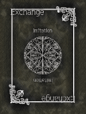
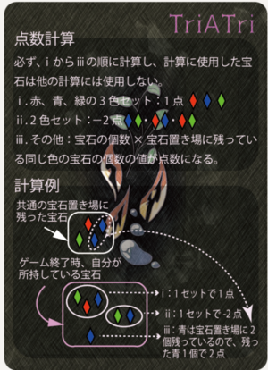

TriATri
Board Game Arena 官方规则文档
Over view
TriATri is a must-follow trick-taking game.
Of the six cards, one card is used to determine the starting player, and the remaining five cards are used for trick-taking.
This is done three times (three rounds), and the player with the highest score wins (with a special win).
What we use
| Cards for Fire, Water and Wood | Imitation card | Cards not used | |
| 2players | 2 to 6 (15 cards) of each color | 2 cards | 5 cards |
| 3players | 2 to 7 (18 cards) of each color | 1 card | 1 card |
| 4players | 2 to 8 (21 cards) of each color | 3 cards | All cards used |
Gems(token): 6 of each color (red (fire), blue (water), green (wood))
Doubling、Exchange
・Doubling
The player with the highest value card always wins, regardless of its color.
Attributes are 3-skewed, with the previous player's card doubling the value of their own card.
If the previous player's card is Fire, then Water is dominant, if it is Water, then Wood is dominant, and if it is Wood, then Fire is dominant attribute.
Only when the player's own card is [2], the value is quadrupled instead of doubled.

・Exchange
The card("imitation" card) on the right is an exception, and can be played at any time.
Of the cards already on the field, it is replaced with the card of the player with the highest value (after taking into account the doubling effect).
If the starting player decides or the starting player plays this, it is treated as a colorless [0].
Start player determination
All players play a card from their hands at the same time, and the player with the highest numbered card is the starting player.
If there is more than one player with the highest number, the game is handled as follows.
・If the two players with the highest numbers are
The dominant color side will be the starting player.
・If the player with the highest number is 3 (4-player game))
The player who plays another numbered card becomes the starting player.
・When the player with the highest number is 3 (3-player game)
Return all cards and redeem them.
・When two players play an imitation card (2-player game)
Return all cards and redeem them.
Trick
・Gem token selection
The starting player selects one gem from the common inventory or their own hand that the winner of the trick will receive.
・Play card
Starting with the starting player, a card is played in a clockwise direction.
If the player has a card of the color of the selected gem, that card is played.
If not, a card of any color is played.
The "imitation" card can be played regardless of its color.
・Gem winning
After all players have finished playing their cards, the player with the highest number (see below) wins the gem.
・Decision of victory or defeat
The player who plays the card with the highest value, including attribute considerations(doubling effect), wins.
If two players play the card with the highest value, the player who plays the card with the dominant attributes wins. (ex. 1)
If the player who played the highest value card has the same attributes or three colors, the player who played the card later wins. (ex. 2,3)
（Example in 4-player game）
(ex. 1) Red 3 ⇒ Blue 6 (treated as 12) ⇒ Green 6 (treated as 12) ⇒ Blue 5 : Green is favored between Blue and Green, so the player with Green 6 wins
(ex 2) Red 4 ⇒ Blue 2 (treated as 8) ⇒ Red 3 ⇒ Blue 4 (treated as 8): Since Blue 2 and Blue 4 are the same color, the player with Blue 4 who played later wins
(ex 3) Red 6 ⇒ Blue 2 (treated as 8) ⇒ Green 4 (treated as 8) ⇒ Red 2 (treated as 8): Since there are three colors (Blue 2, Green 4, and Red 2), the player who played Red 2 later wins
Rounds
One round ends at the end of five tricks when all cards in the hand have been used.
All cards are mixed and redealt six at a time, leaving the currently held gems untouched, and the next round begins.
After a total of three rounds, the score is calculated, but if a special situation arises, the game ends [immediately].
End of game
There are three conditions for game termination, which are handled as follows.
・If either player collects two sets of each of the three colors of gems (red, blue, and green)
The player immediately wins the game (100 points is shown in the BGA) *Placement below 2nd place is determined by the normal score calculation.
・When all gems of one color are gone from the common inventory
Perform the trick to the end and calculate the score immediately afterwards.
・If the above two conditions are not met and three rounds are completed
Calculate the score.
Score Calculation
The following order is calculated according to the type and number of gems you end up with.

*Calculated sequentially from the top set, with each set not duplicated.
・Geｍ in three color sets
1 point per set
・Two-color set gem
-2 points per set
・Remaining gems
Points for [the number of gems of that color remaining in the common inventory] for each one.
The total score will determine the winner.
If the scores are the same, the winner is the player with the highest number of gems.